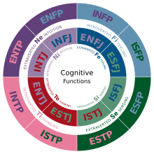

Description
As part of a university full-stack web-application development project for the final year, the development of a friendship matching tool algorithm and its integration into a web-based application takes into consideration the MBTI psychological theory. The Myers-Briggs Type Indicator (MBTI) is a self-report test designed to identify a person's personality type, strengths, and preferences based on cognitive functions. The questionnaire was developed by Isabel Myers and her mother Katherine Briggs, drawing from Carl Jung's theory of personality types. Today, the MBTI theory is widely used as one of the world's most popular psychological instruments.
In this particular project, MBTI theory is used to find the most compatible friends for users within a university context, focusing on psychological functions. According to NHS England (National Health Service), approximately 45% of UK residents suffer from loneliness, and this issue extends to university students as well. Many individuals face challenges in forming new friendships in adulthood due to various factors, including lifestyle and behavioural attitudes. Often, these individuals are unfairly stereotyped or judged, such as introverted individuals being labelled as socially withdrawn. While social networks have provided some relief by connecting people regardless of their physical location, the aim of this project is to address this problem more comprehensively.
The Myers-Briggs Type Indicator (MBTI)
MBTI stands for the Myers-Briggs Type Indicator. It is a widely used psychological tool that assesses and categorizes personality types. The MBTI was developed by Isabel Briggs Myers and her mother, Katherine Briggs, based on the theories of Swiss psychiatrist Carl Jung.
The MBTI measures personality across four dichotomies:
2. Sensing (S) vs. Intuition (N): This dichotomy explores how individuals gather and process information. Sensing types rely on concrete data and details, focusing on what is tangible and practical, while intuitive types are more inclined to look at patterns, possibilities, and the bigger picture.
3. Thinking (T) vs. Feeling (F): This dichotomy examines how individuals make decisions and evaluate information. Thinking types prioritize logical analysis, objectivity, and consistency, whereas feeling types prioritize personal values, emotions, and the impact on others.
4. Judging (J) vs. Perceiving (P): This dichotomy relates to how individuals approach and structure their external environment. Judging types prefer order, planning, and decisiveness, while perceiving types are more adaptable, spontaneous, and open-ended.
These dichotomies combine to form sixteen different personality types, such as ISTJ, ENFP, or ENTJ. Each type represents a unique combination of these preferences and provides insights into how individuals perceive the world, make decisions, and interact with others. The MBTI is commonly used in various settings, including personal development, career counseling, and team-building exercises.
The 16 personalities types are:
1. ISTJ: Introverted, Sensing, Thinking, Judging
2. ISFJ: Introverted, Sensing, Feeling, Judging
3. INFJ: Introverted, Intuition, Feeling, Judging
4. INTJ: Introverted, Intuition, Thinking, Judging
5. ISTP: Introverted, Sensing, Thinking, Perceiving
6. ISFP: Introverted, Sensing, Feeling, Perceiving
7. INFP: Introverted, Intuition, Feeling, Perceiving
8. INTP: Introverted, Intuition, Thinking, Perceiving
9. ESTP: Extraverted, Sensing, Thinking, Perceiving
10. ESFP: Extraverted, Sensing, Feeling, Perceiving
11. ENFP: Extraverted, Intuition, Feeling, Perceiving
12. ENTP: Extraverted, Intuition, Thinking, Perceiving
13. ESTJ: Extraverted, Sensing, Thinking, Judging
14. ESFJ: Extraverted, Sensing, Feeling, Judging
15. ENFJ: Extraverted, Intuition, Feeling, Judging
16. ENTJ: Extraverted, Intuition, Thinking, Judging

Case Studies and Design
The development of an MBTI-based algorithm for a web application aims at matching users based on their MBTI personality types. The motivation behind the project stemmed from the rising concern about loneliness among university students, as highlighted by NHS England. Recognizing the growing influence of technology and social media in exacerbating feelings of isolation, the project seeks to leverage the power of MBTI personality profiling to foster meaningful connections.
To ensure an efficient development process, the agile methodology has been chosen. This allowed for iterative feedback and collaboration, enabling to continuously refine and enhance the algorithm based on user testing and feedback. By incorporating the agile approach, the project ensured a flexible and adaptive development process that aligned with the dynamic nature of the project. The resulting web application provided a platform for university students to connect with others who shared compatible MBTI personality types, ultimately addressing the issue of loneliness, and fostering a sense of belonging in the digital age.

The Agile Methodology
The agile methodology encompasses a dynamic and iterative approach to project management, emphasizing collaboration, flexibility, and continuous improvement. It consists of six stages that drive the development process.
The first stage, requirements, involves gathering and prioritizing user needs and project objectives. Agile teams engage stakeholders, conduct user research, and create user stories to define the project's scope and goals.
Next comes the design stage, where agile teams focus on creating a high-level architecture and user experience (UX) design. Rapid prototyping and feedback loops allow for quick iterations and refinement of design concepts.
The development stage follows, during which small, cross-functional teams work on implementing the features and functionalities outlined in the design stage. Developers collaborate closely, leveraging agile practices like daily stand-up meetings and sprint planning to track progress and address any obstacles.
Testing is a critical stage in the agile methodology. Test-driven development (TDD) and continuous integration practices ensure that features are thoroughly tested, allowing for early detection and resolution of issues. Agile teams conduct frequent testing to maintain quality throughout the development process.
The deployment stage involves releasing the developed features to end-users in a controlled environment. Agile teams utilize continuous delivery and deployment practices to ensure a smooth transition from development to production. User feedback during this stage can inform further iterations and improvements.
Finally, the deployment review stage provides an opportunity for reflection and learning. Agile teams conduct retrospective meetings to evaluate the project's successes, challenges, and areas for improvement. Lessons learned are then applied to future iterations or projects, enabling continuous growth and optimization.
Overall, the agile methodology's six stages enable teams to adapt to evolving requirements, collaborate effectively, and deliver high-quality software solutions through iterative development and continuous feedback loops.

To successfully develop the MBTI-based algorithm, clear requirements were established to ensure efficiency and effectiveness in achieving the desired results. The algorithm was designed as a friendship matching tool, with a strong focus on user-centred design principles and delivering a positive User Experience (UX).
Comprehensive user persona documentation was created, accompanied by surveys that collected valuable data on users' needs and preferences. These requirements were carefully aligned with the project's objectives, ensuring that the algorithm would effectively facilitate connections and match individuals based on their MBTI personality types.
The creation of user personas followed a series of steps. The project goals and objectives were clarified, emphasizing the aim of finding the most compatible potential friends for each user within a short period. Extensive user research was conducted, including surveys targeting people aged 18-25 to gather insights into their experiences of building friendships during the COVID-19 pandemic and the impact of the pandemic on their social skills. Patterns within the collected data were identified, leading to the categorization of the target audience into two distinct groups: university students and young adults not in tertiary education. Based on these categories, one UX persona was created per audience group. Scenarios and user journeys were carefully crafted, specifically tailored to the university context, and characters such as "Emily" were developed to represent individual user personas within that context.
The web application, which hosts the MBTI-based algorithm, was successfully developed according to the established requirements. The navigation and structure of the application were designed based on a carefully planned sitemap, ensuring a seamless and intuitive user experience. The application includes dedicated webpages for finding compatible matches, where users can input their MBTI indicators, view the algorithm's output, and connect with individuals who match their profiles.
The development of the MBTI friendship-matching algorithm required the fulfilment of specific requirements. These included capturing the first, second, third, and fourth letters of the input user's MBTI indicator, ensuring efficient time complexity for fast algorithm execution, providing clear and unambiguous instructions for accurate calculations, and generating outputs that included the best compatible MBTI personality types and a match rate of over 50% between the user's MBTI personality type and other MBTI indicators.
From a technical perspective, the Flask App, a micro web framework, was successfully utilized alongside the algorithm to manage different outputs. The application's development process involved creating a virtual environment, followed by its activation to run the application on the default port 5000. Python modules, such as request and jsonify, were effectively employed to facilitate data elaboration between the client and server-side aspects of the MBTI-based algorithm.
Considering the web application's requirements, the server aspect was meticulously addressed. The development of the web-based application was successfully completed using Xampp, a free and open-source cross-platform web server. Xampp seamlessly integrated Apache, MariaDB, PHP, and Pearl to ensure smooth functioning on both the server and client sides. Apache served as the web server, facilitating the viewing, and debugging of webpages, while PHP, a server-side scripting language, enabled seamless data exchange between the application and the database. MySQL was utilized as the database management system, effectively handling data insertion, creation, and updates, while MariaDB provided a compatible and reliable hosting solution for the database of the web application based on the MBTI-Matching Tool Algorithm.


In the Agile methodology, the development stage involves making important decisions regarding coding languages and design aspects. In the case of the MBTI-based algorithm and website, several coding languages were chosen to fulfill different purposes.
Python was selected as the primary coding language for developing the MBTI-based matching tool algorithm. Its versatility, extensive libraries, and readability make it an ideal choice for implementing complex algorithms. Additionally, Python's compatibility with Flask, a popular web framework, allows seamless integration with web applications.
To store the results of the MBTI-based algorithm and user data, such as personal MBTI personality types, a combination of MySQL and PHP was employed. MySQL is a reliable and widely used relational database management system, while PHP serves as a server-side scripting language that facilitates data retrieval and manipulation. It also enables the retrieval of user information and profile data, such as profile pictures, to display on the website.
HTML, JavaScript, and CSS were utilised for creating the website's content, interactivity, and styling, respectively. HTML forms the backbone of web pages, providing structure and organizing elements. JavaScript adds dynamic behavior to the website, allowing for real-time updates and user interactions. CSS, on the other hand, focuses on the visual presentation, including layout, colors, and fonts, ensuring an aesthetically pleasing and cohesive design.
Flask App, a Python web framework, was incorporated to transmit the results of the algorithm to the Find Result page. It acts as an intermediary between the algorithm and the web application, facilitating the transfer of data and enhancing the overall functionality of the application.
Moving on to the design aspect, the MBTI-based algorithm revolves around the user's input of their MBTI personality types . Each MBTI type consists of four letters, each associated with a specific value representing the four scales. The algorithm compares the input from two or more individuals, calculates the arithmetic mean of the shared letter values, and uses probability notions to determine compatibility. If the result is equal to or greater than 50%, it suggests a probable match between the individuals.
To visualise and plan the flow of the web application, the design prototypes were created using Figma, a rapid design tool. The first prototype adopted a color scheme dominated by purple. Purple, being a combination of calming blue and powerful red, conveys a sense of authority and tranquility. This color choice aligns with the intended user experience, aiming to make users feel empowered and at ease while using the application.
After considering aspects of website accessibility and usability, including color contrast and readability, the background color was revised to black. Black provides enhanced contrast and serves as a neutral backdrop, ensuring better visibility and legibility of website elements. However, the color purple remained as the brand color, featured in buttons, logos, and icons throughout the web application.
To gather user preferences and feedback, A/B tests were conducted comparing the two wireframes. Test participants were asked to assess the wireframes in terms of color, images, and font. The majority of respondents (64%) favored a black background for improved contrast, while 9 out of 14 participants found the purple background distracting. In terms of font style and readability, the first wireframe, which utilized the Verdana font from the Segoe UI font family with different font sizes for headings and text, was preferred by 9 out of 14 participants.
Card sorting tests were conducted to determine the optimal positioning of elements and content within the webpages. Participants were asked to analyze and compare cards representing various webpage elements. The results indicated preferences for the position of elements such as the text content, logo, and navigation bar. These findings helped inform the placement of elements during the development phase, ensuring a user-friendly interface and a positive user experience.
To view the previous design for mobile phones with the purple background for the web-based application, please click here.
By considering these design considerations and incorporating user feedback, the development phase of the MBTI web application aimed to create an engaging and user-centric experience. These coding languages and frameworks have been used to bring the design prototypes to life.
During the development process, the Python programming language played a crucial role in implementing the MBTI-based matching algorithm. Using Python's rich ecosystem of libraries and its flexibility, the algorithm's logic was translated into functional code successfully. The Flask web framework has been leveraged to create the necessary endpoints and routes, enabling the communication between the algorithm and the web application.
MySQL and PHP were employed to establish a robust database system that could store the algorithm's results and user data securely. The database schema was designed efficiently that allowed for organised storage and retrieval of information. PHP scripts were created to handle database operations, such as storing the algorithm's outcomes and managing user profiles. This integration ensured a seamless user experience and accurate data management.
HTML, JavaScript, and CSS were utilised collaboratively to construct the website's front-end components. HTML markup was used to structure the pages and define the content hierarchy. JavaScript, with its versatility and interactivity, enabled real-time updates and dynamic behavior within the web application. This allowed users to experience a responsive and engaging interface. CSS was responsible for the website's visual presentation, applying custom styles, layouts, and animations to enhance the overall user experience.
Throughout the development phase, the usability, accessibility, and responsiveness were paid close attention. A rigorous testing was conducted to ensure compatibility across different browsers and devices. By adhering to web development best practices, the aim to create a web application that would perform optimally and provide a seamless experience to users was accomplished.
Additionally, the user feedback gathered from the A/B tests and card sorting exercises were incorporated. The preferred design choices, such as the black background for improved contrast and the selected font styles, were implemented to align with user preferences and enhance readability.
As the development phase progressed, regular iterations and reviews were conducted to address any bugs or issues. The collaborative nature of Agile methodology allowed for continuous improvement and fine-tuning of the web application's functionalities.
Overall, the development phase of the MBTI-based web application encompassed the utilization of Python, MySQL, PHP, HTML, JavaScript, and CSS. Through careful implementation and adherence to design principles, the initial prototypes was transformed into a fully functional and user-friendly application. By combining the power of coding languages, frameworks, and design elements, the MBTI-based matching tool was brought to life successfully, providing users with a reliable and enjoyable platform to explore and understand their personality traits.
To watch the video of the final design and web-based application with its functionalities, click here.


A/B tests on the MBTI-based Web Application

Card Sorting tests on the MBTI-based Web Application